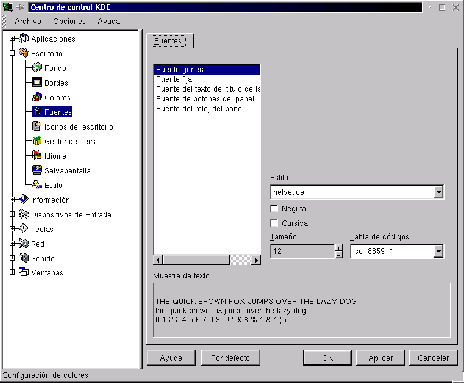

Next: Íconos de Escritorio
Up: Personalización del escritorio
Previous: Colores
Índice General
Figura 3.7:
Personalización de tipografías
|

|
Esta sección permite personalizar las clases de tipografías que se
mostrarán en los diferentes sectores del escritorio, en la figura
3.7 puede observarse que
existen unas cinco categorías diferentes para configurar (Fuente
general, Fuente fija, etc.), cada una de estas categorías se les puede
asignar un estilo de tipografía, su tamaño y características,
teniendo siempre el cuadro de Muestra de texto para
previsualizar los cambios.
Proyecto Cursos - LuCAS - http://lucas.hispalinux.es/htmls/cursos.html